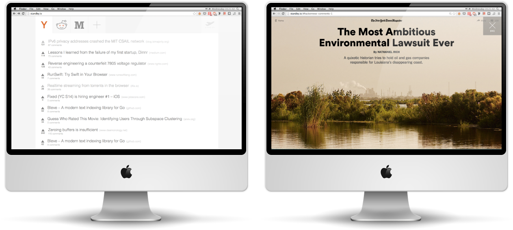

Toggle navigation
DESIGN
ABOUT
CONTACT
Downloads and caches the front pages
of Reddit, Hacker News, Medium and Product Hunt.
I had been wanting to build this site for long flights so I could have the experience of browsing even without Wifi.

I built it over the summer with three friends at Greylock’s Hackfest. We got great feedback and landed in the Top 10.
We’re now cleaning it up and launching soon.
Check it out at
Standby.io